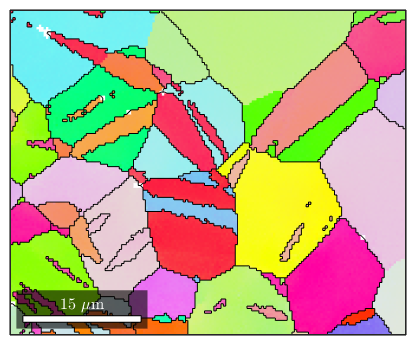
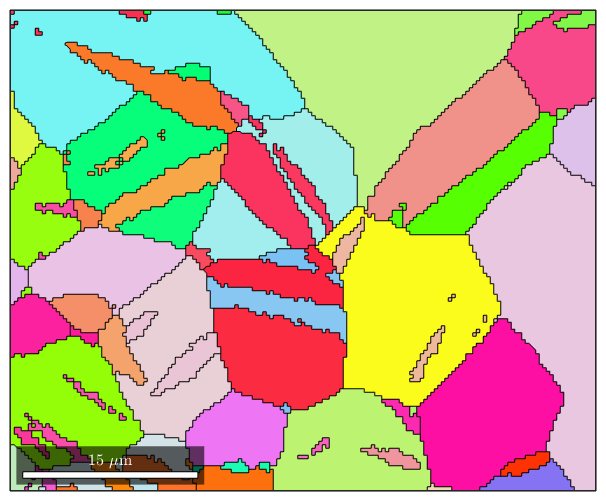

Frequently asked questions
MTEX has been succesfully tested on MATLAB version 2012b with no toolboxes. It should also work fine on student versions.
This indicates that your MATLAB installation has problems to interprete LaTex. As a workaround switch off LaTex by uncommenting the following line in mtex_settings.m.
setMTEXpref('LaTex',false);This is most likely a Matlab rendering issue. You can change the renderer Matlab uses for plotting by
set(gcf,'renderer','zBuffer')
You might use the import_wizard by typing
import_wizard
See also
The OSC file format is a commercial binary EBSD format that has undergone heavy changes. For that reason it hard for MTEX to keep up with a functional interface. As a workaround export your data to ANG file. Those can be easily imported into MTEX.
| DocHelp 0.1 beta |